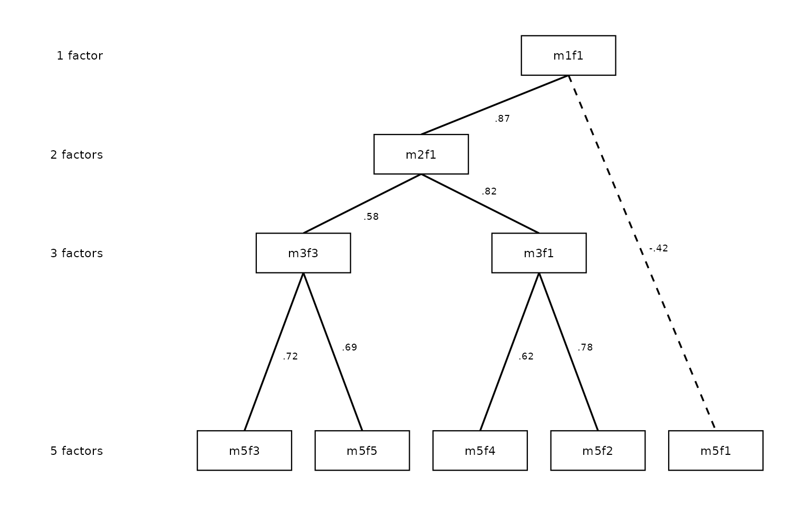
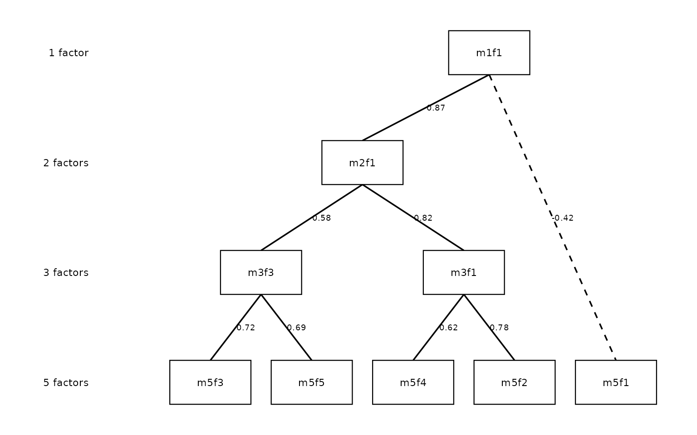

The Forbes Extension: Skip-Level Connections and Pruning
Source:vignettes/ackwards-forbes.Rmd
ackwards-forbes.RmdThe classic Goldberg (2006) method computes between-level factor-score correlations only for adjacent levels: 1↔︎2, 2↔︎3, 3↔︎4, and so on. Forbes (2023) extended this in two ways: computing correlations across all level pairs (not just adjacent), and using those extra connections to identify and flag redundant or artifactual factors in the hierarchy.
This vignette covers both extensions: pairs = "all" and
prune.
The limitation of adjacent-only edges
An adjacent-only hierarchy shows you the immediate parent–child relationships. What it cannot tell you is whether a factor at level k is essentially the same construct as a factor several levels up — a sign that the intermediate levels are adding noise rather than resolution.
Consider a factor that appears at k = 2, k = 3, and k = 4 and correlates > 0.97 with its counterpart at every adjacent level. The adjacent-only diagram shows three consecutive arrows, each nearly perfect. But nothing in the diagram directly flags that the k = 3 factor is redundant: you could skip straight from k = 2 to k = 4 without losing any information.
Skip-level correlations make this visible by computing the correlation between every pair of levels, not just neighbors.
Computing every between-level correlation with
pairs = "all"
Adding pairs = "all" extends the edge table from
adjacent pairs only to every combination of levels.
# Classic adjacent-only
x_adj <- ackwards(bfi, k_max = 5, cor = "polychoric")
# All pairs
x_all <- ackwards(bfi, k_max = 5, cor = "polychoric", pairs = "all")
# How many edges?
nrow(tidy(x_adj, what = "edges")) # adjacent only
#> [1] 40
nrow(tidy(x_all, what = "edges")) # all pairs
#> [1] 85With k = 5, the adjacent-only model has 40 edges (1×2 + 2×3 + 3×4 + 4×5). The all-pairs model adds every non-adjacent pair — 1↔︎3, 1↔︎4, 1↔︎5, 2↔︎4, 2↔︎5, 3↔︎5 — for 85 edges total.
Reading the skip-level edge table
The table below keeps the non-adjacent edges (levels more than one
apart) with |r| >= 0.5, strongest first — drawn from
tidy(x_all, what = "edges"):
| Strongest skip-level edges (|r| ≥ 0.5, non-adjacent levels) | ||||
| Sorted by |r|; shows at most 12 rows | ||||
| From | To | Level (from) | Level (to) | r |
|---|---|---|---|---|
| m3f2 | m5f2 | 3 | 5 | 0.98 |
| m2f2 | m4f2 | 2 | 4 | 0.97 |
| m2f2 | m5f2 | 2 | 5 | 0.97 |
| m2f1 | m4f1 | 2 | 4 | 0.85 |
| m3f1 | m5f1 | 3 | 5 | 0.82 |
| m1f1 | m3f1 | 1 | 3 | 0.77 |
| m1f1 | m4f1 | 1 | 4 | 0.75 |
| m3f3 | m5f3 | 3 | 5 | 0.73 |
| m2f1 | m5f1 | 2 | 5 | 0.69 |
| m3f3 | m5f5 | 3 | 5 | 0.68 |
| m1f1 | m5f1 | 1 | 5 | 0.61 |
| m3f1 | m5f4 | 3 | 5 | 0.56 |
Several factors connect across two or more levels with correlations above 0.90. m3f2 (level 3, factor 2) correlates 0.98 with m5f2 (level 5, factor 2), jumping two levels. This tells you that m3f2 and m5f2 are essentially the same construct — the intermediate levels are just refinements within a stable dimension.
How certain is the strongest edge? boot_edges()
Reading the strongest edge off a table of many correlations is a form of selection. With k = 5 the all-pairs table holds 85 edges; the maximum of that many correlations is biased upward even when every individual estimate is honest. Before leaning on “m3f2 and m5f2 are the same construct,” it is worth asking how precisely each edge is estimated.
boot_edges() attaches a nonparametric bootstrap standard
error and percentile confidence interval to every edge. Each replicate
resamples respondents, recomputes the correlations, refits the whole
hierarchy, and — importantly — re-anchors each replicate’s factors to
the full-sample solution (matching and sign-orienting them) so that
factor label-switching across replicates does not contaminate the
intervals.
boot_edges() runs on the PCA and EFA engines with a
Pearson or Spearman basis; it does not bootstrap a polychoric matrix in
every replicate (slow and unstable, the same scope as
comparability()). For an ordinal instrument like the BFI,
fit the final model with cor = "polychoric" but screen edge
stability on a Pearson-basis EFA of the same items:
set.seed(1)
x_boot <- ackwards(bfi, k_max = 5, engine = "efa", pairs = "all") |>
boot_edges(bfi, n_boot = 200, seed = 1)
#> Warning: ! 25 columns look like ordinal/Likert items (<= 7 distinct integer values):
#> "A1", "A2", "A3", "A4", "A5", "C1", …, "O4", and "O5".
#> ℹ Results use a "pearson" basis. Consider `cor = "polychoric"` for ordinal
#> data.
#> This warning is displayed once per session.
#> ℹ Fitting 200 bootstrap replicates (EFA, k = 1-5)...
#> ✔ Fitting 200 bootstrap replicates (EFA, k = 1-5)... [36.5s]
#>
boot_tbl <- tidy(x_boot, what = "edges", sort = "strength")
skip_boot <- boot_tbl[
abs(boot_tbl$level_to - boot_tbl$level_from) > 1 & abs(boot_tbl$r) >= 0.5,
c("from", "to", "r", "lo", "hi")
]
head(skip_boot, 6)
#> from to r lo hi
#> 4 m3f2 m5f1 0.9897391 0.9673909 0.9973950
#> 6 m2f2 m4f2 0.9759641 0.9183303 0.9932987
#> 7 m2f2 m5f1 0.9733982 0.9138369 0.9901712
#> 11 m3f3 m5f3 0.8960495 0.6732509 0.9768403
#> 14 m2f1 m4f1 0.8806961 0.7226635 0.9256204
#> 15 m1f1 m3f1 0.7974610 0.7248725 0.8533350The lo/hi columns are the 95% percentile
interval. A skip-level edge whose interval sits comfortably above
prune()’s redundancy_r threshold (0.9 by
default) is a defensible “same construct” claim; one whose interval
straddles the threshold should not be treated as decisively
redundant.
A caution the intervals cannot resolve: they describe each edge on its own. They do not correct for having searched the 85-edge table for the largest value. Treat them as per-edge error bars, not a familywise guarantee — if the strongest-edge claim is load-bearing, pre-specify which pair you care about rather than reporting whichever came out largest.
Pruning: identifying redundant factors
The prune() verb uses the skip-level correlations to
automatically flag factors that may not be adding genuine information to
the hierarchy.
Chains of near-identical factors with
prune(x, "redundant")
A redundant chain is a sequence of factors connected by near-perfect correlations (|r| ≥ 0.9 by default) across levels. If m2f2 → m3f2 → m4f2 → m5f1 all share r > 0.97, the chain reaches the deepest level, so its bottom node m5f1 — the most specific, best-defined manifestation — is retained and the others (m2f2, m3f2, m4f2) are flagged as redundant: they repeat rather than refine the same dimension. A chain that stops short of the deepest level instead keeps its top node, the broadest manifestation (Forbes, 2023).
x_prune <- ackwards(bfi, k_max = 5, cor = "polychoric", pairs = "all") |>
prune("redundant")
#> ℹ Redundancy pruning (|r| ≥ 0.9) flagged 6 nodes.
#> ℹ Nodes are retained in the object; inspect with `x$prune$nodes` and
#> `x$prune$chains`.| Node-level pruning annotation | |||
| 6 of 15 factors flagged as redundant | |||
| Factor | Level | Flagged? | Reason |
|---|---|---|---|
| m1f1 | 1 | FALSE | — |
| m2f1 | 2 | FALSE | — |
| m2f2 | 2 | TRUE | redundant |
| m3f1 | 3 | FALSE | — |
| m3f2 | 3 | TRUE | redundant |
| m3f3 | 3 | FALSE | — |
| m4f1 | 4 | TRUE | redundant |
| m4f2 | 4 | TRUE | redundant |
| m4f3 | 4 | TRUE | redundant |
| m4f4 | 4 | TRUE | redundant |
| m5f1 | 5 | FALSE | — |
| m5f2 | 5 | FALSE | — |
| m5f3 | 5 | FALSE | — |
| m5f4 | 5 | FALSE | — |
| m5f5 | 5 | FALSE | — |
6 factors are flagged as redundant (m2f2, m3f2, m4f1, m4f2, m4f3, m4f4): 1 factor at k = 2, 1 factor at k = 3, the entire k = 4 level. This is a striking finding: for this dataset and this k, the four-factor level adds little beyond what you already know from k = 3 and k = 5.
The flagged factors are not removed from the object —
prune() is purely a diagnostic annotation, not a deletion.
You can still inspect their loadings, use their scores, and include them
in the diagram. Pruning flags guide interpretation; they do not alter
the model.
The pruned-factor diagram
For presentations and publications it is cleaner to omit the flagged
factors entirely and draw direct connections from each retained factor
to its single strongest kept ancestor — even when that ancestor is
several levels away. This is the Forbes (2023) pruned-factor diagram,
activated by drop_pruned = TRUE.
Forbes (2023) presents two variants: one with correlation labels on each arrow and one without. The first is useful when the strength of each spanning connection matters to the interpretation; the second is cleaner for presentations. Both are reproduced below using the same publication style — black lines, uniform width, plain line ends, and no legend.
With correlation labels
(show_r = TRUE):
autoplot(x_prune,
drop_pruned = TRUE, show_r = TRUE,
color_pos = "black", color_neg = "black",
edge_linewidth = 0.6, show_arrows = FALSE, legend = FALSE
)
Without labels (cleaner for slides or when the exact values are not the focus):
autoplot(x_prune,
drop_pruned = TRUE,
color_pos = "black", color_neg = "black",
edge_linewidth = 0.6, show_arrows = FALSE, legend = FALSE
)Level 4 is entirely pruned, leaving a visible gap in the y-axis. The
gap is intentional: it shows which level was removed. Spanning
arrows bridge directly from level 3 factors to level 5 factors (and from
level 2 to level 5 where intermediate levels were flagged). In this
publication style every drawn line has the same uniform weight
(edge_linewidth = 0.6); only connections with |r| at or
above the display threshold (cut_show, default 0.3) are
drawn at all.
To close the gaps and compact the layout while retaining the original level numbers on the axis:
autoplot(x_prune,
drop_pruned = TRUE, compress_levels = TRUE,
color_pos = "black", color_neg = "black",
edge_linewidth = 0.6, show_arrows = FALSE, legend = FALSE
)
The level labels still read “1 factor”, “2 factors”, “3 factors”, “5 factors” so readers know which levels were retained; the uniform vertical spacing makes the diagram easier to read in constrained page layouts.
For further cosmetic customization — colours, node labels,
arrowheads, and more — see
vignette("ackwards-visualization").
Inspecting structural similarity with
prune(x, "artifact")
An artifact factor is one that looks like a copy of a factor from another level rather than a genuine refinement — its loading pattern closely resembles a factor elsewhere in the hierarchy. Similarity is measured by Tucker’s congruence coefficient (φ):
φ ranges from −1 to +1, with values above 0.95 conventionally read as near-identical loading patterns regardless of sign (Lorenzo-Seva & ten Berge, 2006).
Unlike "redundant", the artifact mode never
flags anything automatically. Forbes (2023) is explicit that
identifying an artifact requires researcher judgment — automating it
would manufacture investigator degrees of freedom — so
prune(x, "artifact") computes and stores the evidence for
you to weigh: Tucker’s φ for every cross-level
factor pair in x$prune$phi, plus the structural signals of
the next section in x$prune$structural.
x_art <- ackwards(bfi, k_max = 5, cor = "polychoric", pairs = "all") |>
prune("artifact")
#> ℹ Artifact mode: Tucker's φ computed for all cross-level factor pairs.
#> ℹ Structural signals computed: 2 factors flagged (few_items / orphan /
#> split_merge).
#> ℹ Inspect `x$prune$phi` and `x$prune$structural`; removal is a researcher
#> judgment (Forbes, 2023).The table to read is x$prune$phi. The natural first cut
is the non-adjacent pairs with the highest |φ| — a deep
factor whose loading pattern nearly duplicates a factor two or more
levels up is the classic candidate:
| Strongest non-adjacent loading congruences | ||||
| Top 8 pairs by |φ|, from x$prune$phi — evidence, not flags | ||||
| From | To | Level (from) | Level (to) | φ |
|---|---|---|---|---|
| m3f2 | m5f2 | 3 | 5 | 0.99 |
| m2f2 | m4f2 | 2 | 4 | 0.98 |
| m2f2 | m5f2 | 2 | 5 | 0.98 |
| m2f1 | m4f1 | 2 | 4 | 0.93 |
| m3f1 | m5f1 | 3 | 5 | 0.92 |
| m1f1 | m3f1 | 1 | 3 | 0.88 |
| m1f1 | m4f1 | 1 | 4 | 0.86 |
| m2f1 | m5f1 | 2 | 5 | 0.85 |
For these data the strongest non-adjacent congruence is |φ| = 0.99. Values near 1 mean the deeper factor recycles an earlier loading pattern; whether that makes it a rotation artifact — or a faithfully persisting construct, which is the redundancy view of the same fact — is a judgment made with the substantive content of the items in view, not a threshold the package applies for you.
The two modes surface different fingerprints of the same underlying question:
-
"redundant": this factor appears at multiple levels with near-identical score correlations — it persists unchanged as k increases. Auto-flagged (with Forbes’s retention rule), because the score-correlation chain is a sharp, replicable criterion. -
"artifact": this factor’s loading pattern closely resembles a factor elsewhere in the hierarchy, or its structure looks under-identified (next section). Reported only — the call is yours.
Structural artifact signals
Congruence (φ) is not the only fingerprint of an artifactual factor.
Forbes (2023, Fig. 2) describes several structural signatures,
and prune(x, "artifact") reports three of them per factor
in x$prune$structural:
-
few_items— the factor is the primary (highest-loading) home for fewer thanmin_itemsitems (default3). A factor anchored by one or two items is under-identified and often an extraction artifact rather than a replicable construct. -
orphan— the factor’s strongest correlation to the immediately neighbouring levels is beloworphan_r(default0.5). It does not connect to the solutions on either side, so it does not replicate across the hierarchy. -
split_merge— the factor’s primary items were spread across two or more different parent factors at the level above. Items that were separated at the coarser solution have been merged under one factor at the finer solution — the split-then-merge anomaly of Forbes Fig. 2.
| Structural artifact signals | ||||
| 2 of 15 factors raise a structural signal | ||||
| Factor | Level | Few items | Orphan | Split/merge |
|---|---|---|---|---|
| m1f1 | 1 | FALSE | FALSE | FALSE |
| m2f1 | 2 | FALSE | FALSE | FALSE |
| m2f2 | 2 | FALSE | FALSE | FALSE |
| m3f1 | 3 | FALSE | FALSE | FALSE |
| m3f2 | 3 | FALSE | FALSE | FALSE |
| m3f3 | 3 | FALSE | FALSE | TRUE |
| m4f1 | 4 | FALSE | FALSE | FALSE |
| m4f2 | 4 | FALSE | FALSE | FALSE |
| m4f3 | 4 | FALSE | FALSE | FALSE |
| m4f4 | 4 | FALSE | FALSE | TRUE |
| m5f1 | 5 | FALSE | FALSE | FALSE |
| m5f2 | 5 | FALSE | FALSE | FALSE |
| m5f3 | 5 | FALSE | FALSE | FALSE |
| m5f4 | 5 | FALSE | FALSE | FALSE |
| m5f5 | 5 | FALSE | FALSE | FALSE |
Like Tucker’s φ, these signals are flag-and-report
only — prune() never removes a factor on their
basis. Identifying an artifact requires researcher judgment (Forbes is
explicit that this step introduces investigator degrees of freedom); the
signals simply point you to the factors worth a closer look. The two
thresholds, min_items and orphan_r, are
arguments to prune().
Tuning the thresholds
The redundancy criterion has an adjustable redundancy_r
threshold (default 0.90) matching Forbes (2023). The
artifact criterion has no auto-flag threshold —
prune(x, "artifact") computes Tucker’s φ for researcher
inspection; no factors are auto-flagged.
The redundancy_phi companion criterion.
Redundancy can optionally require that linked factors also share a
loading pattern (Tucker’s φ above a threshold), not just a high score
correlation. The redundancy_phi argument controls this, and
its default (NULL) auto-resolves based on the
engine:
-
PCA — no φ filter. Component scores are
determinate: unlike factor scores they are exact linear
functions of the observed data, so the score correlation
|r|is the correlation between the components themselves and suffices as the redundancy signal. -
EFA / ESEM — φ is required to exceed
0.95(Lorenzo-Seva & ten Berge, 2006). Factor scores are indeterminate — any factor admits infinitely many score series consistent with the model — which makes an|r|-only rule too liberal; the loading-congruence guard makes the criterion conservative.prune()announces this auto-resolution in the console.
The examples here use the default PCA engine, so no φ filter is
applied. To disable the φ guard on an EFA/ESEM run, pass
redundancy_phi = NA; to set your own threshold, pass a
number in (0, 1].
For the BFI, the result is the same across a wide range of thresholds because the redundant chains all have correlations > 0.97 — the flagging is unambiguous. With your own data you may find borderline cases where the threshold matters:
Because prune() is a cheap, standalone step, checking a
few redundancy_r thresholds does not require refitting
ackwards() each time — the already-fit x_all
object is re-pruned directly:
thresholds <- c(0.80, 0.85, 0.90, 0.95)
counts <- sapply(thresholds, function(thr) {
x <- prune(x_all, "redundant", redundancy_r = thr)
sum(tidy(x, what = "nodes")$pruned)
})
#> ℹ Redundancy pruning (|r| ≥ 0.8) flagged 9 nodes.
#> ℹ Nodes are retained in the object; inspect with `x$prune$nodes` and
#> `x$prune$chains`.
#> ℹ Redundancy pruning (|r| ≥ 0.85) flagged 8 nodes.
#> ℹ Nodes are retained in the object; inspect with `x$prune$nodes` and
#> `x$prune$chains`.
#> ℹ Redundancy pruning (|r| ≥ 0.9) flagged 6 nodes.
#> ℹ Nodes are retained in the object; inspect with `x$prune$nodes` and
#> `x$prune$chains`.
#> ℹ Redundancy pruning (|r| ≥ 0.95) flagged 6 nodes.
#> ℹ Nodes are retained in the object; inspect with `x$prune$nodes` and
#> `x$prune$chains`.
thr_df <- data.frame(redundancy_r = thresholds, n_flagged = counts)| Factors flagged redundant at each redundancy_r threshold | |
| redundancy_r | Factors flagged |
|---|---|
| 0.80 | 9 |
| 0.85 | 8 |
| 0.90 | 6 |
| 0.95 | 6 |
For the BFI all thresholds agree: the flagged factors are robustly redundant, not borderline cases. In noisier datasets or smaller samples you will typically see the count increase as you lower the threshold.
Practical interpretation
The Forbes extension does not change the core bass-ackwards analysis. It enriches it with two questions:
Do any factors persist unchanged across multiple levels? (
pairs = "all") Skip-level correlations near 1.0 indicate stable dimensions that survive changes in k — exactly the kind of robust construct you want to report.Are there levels where the factor structure is just reorganizing rather than genuinely differentiating? (
prune(x, "redundant")) Flagged levels can often be removed from the k range without losing interpretive content.
A common workflow: fit with pairs = "all" first to
examine the full picture, then pipe the result through
prune(x, "redundant") to identify which levels add the most
new information, and use that to guide your focus in reporting. For
where redundancy pruning sits in the full recommended workflow —
alongside a split-half replicability gate on hierarchy depth
(comparability()) — see
vignette("ackwards-girard").
References
Forbes, M. K. (2023). Improving hierarchical models of individual differences: An extension of Goldberg’s bass-ackward method. Psychological Methods. https://doi.org/10.1037/met0000546
Goldberg, L. R. (2006). Doing it all bass-ackwards. Journal of Research in Personality, 40(4), 347–358.
Lorenzo-Seva, U., & ten Berge, J. M. F. (2006). Tucker’s congruence coefficient as a meaningful index of factor similarity. Methodology, 2(2), 57–64. https://doi.org/10.1027/1614-2241.2.2.57
Tucker, L. R. (1951). A method for synthesis of factor analysis studies (Personnel Research Section Report No. 984). Department of the Army.